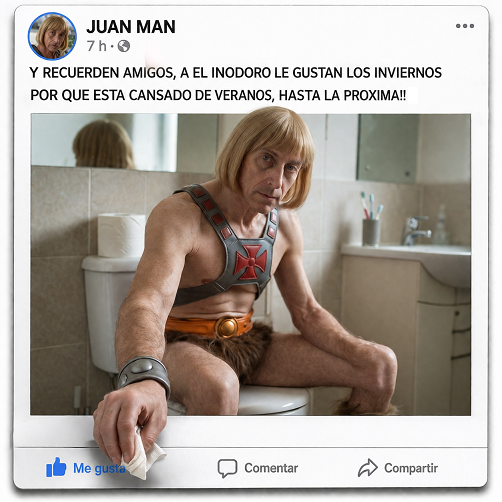

POST ROMPE CUARTA PARED IA

¿Qué es?
Crea una impactante ilusión óptica 3D donde el autor de un post de red social (Facebook, Instagram o YouTube) cobra vida y sale físicamente del marco para interactuar con los botones de la interfaz.
¿Cómo usarlo?
- Abre Google Flow y selecciona Nano Banana 2 en proporción cuadrada (1:1).
- En Ingredients, sube la foto del protagonista con + Add Image.
- Etiqueta la imagen como
Personaje 1para que el cuerpo que sale del recuadro mantenga rasgos y vestimenta idénticos. - Configura la plataforma y la interacción 3D en el prompt y genera la publicación.
Cómo personalizar / Parámetros:
Completa PLATFORM: (A, B o C), FACEBOOK/USER NAME:, POST TEXT: y 3D ACTION: (ej: la mano sale y presiona el botón de Me gusta proyectando sombra).
Prompt para copiar
############################################### ## USER INPUT ############################################### PLATFORM: [Selecciona: A) Facebook / B) Instagram / C) YouTube Community] FACEBOOK/USER NAME: [Nombre del usuario] POST TEXT: [Texto de la publicación y hashtags] 3D ACTION: [Describe qué parte del sujeto sale de la foto y qué parte de la interfaz toca o tapa] ############################################### ## SYSTEM PROMPT / INSTRUCTIONS ############################################### Create an ultra-realistic 1:1 square composition of a social media post. The final image must contain ONLY the publication itself, from the profile header to the reaction buttons. 1. PLATFORM UI REPLICATION: IF PLATFORM A (Facebook): Standard feed layout. Profile pic, name, and time at the top. Text below. Main photo in the middle. Like/Comment/Share bar at the bottom. IF PLATFORM B (Instagram): Profile pic and name at the top. Main photo as the hero element. Heart/Comment/Share icons directly below the photo. Caption text at the bottom. IF PLATFORM C (YouTube Community): Circular profile pic and name. Text post. Main photo below the text. Like/Dislike/Comment icons at the bottom. 2. MANDATORY RESTRICTIONS: NO EXTRA UI: Do NOT include top navigation bars, search bars, browser menus, or notification icons. The composition starts exactly at the profile header and ends at the interaction buttons. ASPECT RATIO: Strictly 1:1 square. No cropping of the UI elements. 3. THE "OUT OF BOUNDS" 3D EFFECT: The central photograph is a living 3D portal. Execute the "3D ACTION" by making the subject or objects physically emerge from the frame. Depth & Overlap: The elements exiting the photo MUST be rendered ON TOP of the white interface, partially covering text, borders, or buttons. Physical Interaction: Use contact shadows and ambient occlusion where the subject "touches" the UI to create a believable pop-out illusion. Seamless Transition: The subject must look integrated with the photo's background while their limbs/objects exist in the "UI space". 4. VISUAL STYLE & QUALITY: Use the uploaded image for subject reference. Style: Hyper-realistic, 8K, Cinematic VFX, Ray Tracing, Global Illumination. High-quality DSLR photography textures. The UI must look like a clean, sharp screenshot, while the 3D elements look like real-world objects casting shadows on it.